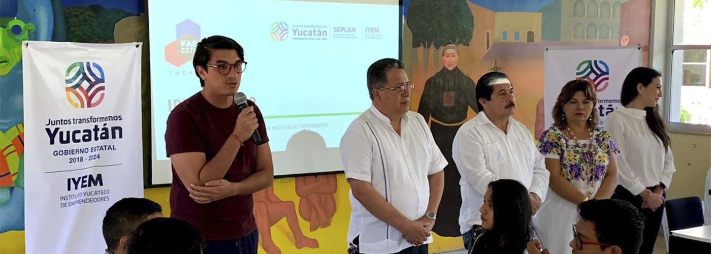
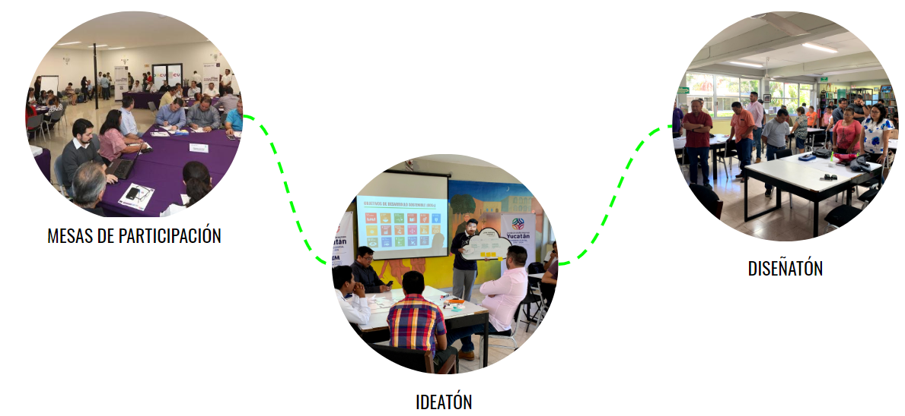
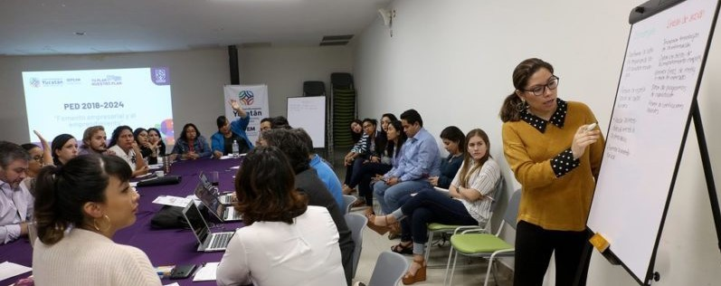

PARTICIPACIÓN CIUDADANA
Sumar la visión e ideas ciudadanas para la construcción del Plan Estatal de Desarrollo 2018-2024.
Con la finalidad de integrar las propuestas e iniciativas del ecosistema emprendedor de Yucatán al Plan Estatal de Desarrollo 2018-2024, se implementó una estrategia de participación ciudadana para recabar dichas iniciativas en Mérida y en todas las regiones del interior del estado. El proceso se lleva a cabo de la siguiente forma:
FASE 1: Mesas de participación
Se llevaron a cabo en las instalaciones del IYEM entre el mes de Enero y Febrero contando con la participación de X numero de emprendedores donde se identificaron, según eje por sector, desafíos susceptibles de resolverse con ideas de emprendimiento.
FASE 2: Ideatón
Se llevó a cabo del 5 al 18 de Febrero, sumandose 9 sedes del interior del estado participando ciudadanos de diferente perfil generando ideas de emprendimiento por medio de identificación, jerarquización y elaboración de propuestas.

FASE 3: Diseñatón
Se llevará a cabo en el mes de Abril donde se creará una plataforma de monitoreo y seguimiento, que será un evento de tres días intensivos de trabajo colaborativo en los que equipos formados por emprendedores, alumnos universitarios, profesores o investigadores deberán idear y diseñar un sitio para evaluar el Plan Estatal de Desarrollo.